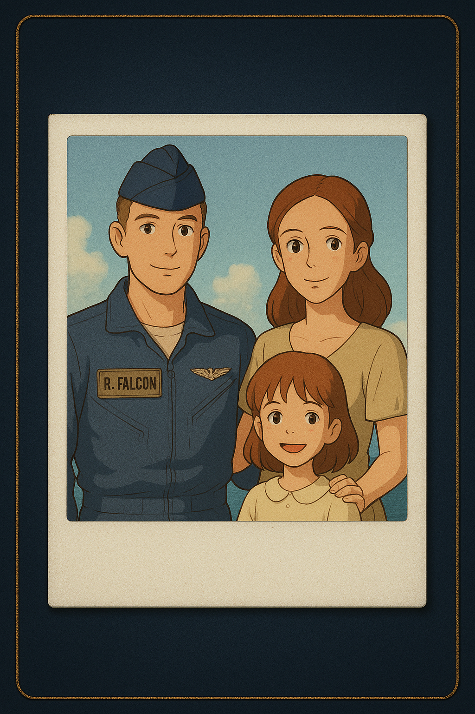

BALANCE OF POWER
A cold war mystery of memory, loyalty and survival
CLUE CARD

00:00
A cold war mystery of memory, loyalty and survival
Balance of Power is a Cold War audio mystery game where you recover memories and unravel secrets using QR-coded story cards.
Your mission is to scan clues, listen to audio fragments, and piece together the true story — one memory at a time.